块稀疏特征器提升 VLA 的精细转向能力
块稀疏特征器用更少特征实现语义、视觉、几何三路 VLA 行为转向，并反查训练数据中承载失败恢复行为的少量 token。
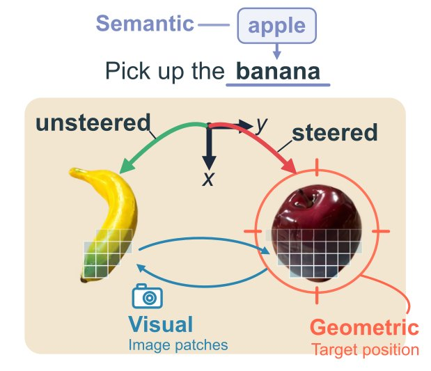
图中展示通过语义、视觉与几何三种表征进行的细粒度转向：在不改变输入图像与指令的情况下，干预把预测动作从被提示的物体改向另一个物体。
解决了什么问题。视觉-语言-动作模型（VLA）正被尝试用于真实机器人，但其内部计算几乎无人了解；现有可解释性工作大多默认线性表示假设，用稀疏自编码器（SAE）把激活拆成单个方向。然而视角、位置、光照等连续感知因素天然落在低维流形上，标量特征难以刻画，干预常常效果不一致、偏离目标或过弱。此前 VLA 上的 SAE 研究还普遍使用池化激活或规模很小的语料，难以判断特征发现本身能否做得更好。
方法。作者把块稀疏特征器（BSF）用于 MolmoAct2、π0.5 与 MolmoBot：每个特征用低维子空间而非单一方向表示，并保留图像、文本、状态 token 不池化，构建约 5200 万条激活、覆盖 45,344 个 episode 的语料，使 SAE 基线只在块维度上与之不同。他们还加入 Fisher 加权变体，按重建误差对动作似然的影响来加权训练。验证分两部分：在语义、视觉、几何三个位置搜索能改变目标物体的最小特征集并做闭环真机实验；再用特征定位训练数据中与失败恢复有关的片段并掩蔽对应损失。
关键结果。在 52 个留出场景对比中，单个几何 BSF 块即可复现 99.7% 的激活补丁效果；语义转向 BSF 用 2.15 个特征达到 83.8% 恢复率（SAE 为 3.50 个特征、81.9%），视觉转向 BSF 用 20.40 块对 36.25 个 SAE 特征，但 SAE 的留出恢复更高（97.3% 对 84.6%）。闭环语义重定向中，BSF 平均用 2.3 个特征使 93.3% 的试验完成抓取并放置，SAE 用 2.5 个特征为 75.0%。数据侧，作者在 DROID 的 74,604 个 episode 中标出 4,866 个（6.5%）含失败恢复的片段，掩蔽其中约 1.38% 的 token 后，夹爪重开时间由 3.13 秒升至 12.93 秒（表 2），普通抓取放置任务仍为 100% 成功、时长 11.79 秒对 12.13 秒。
为什么值得看。把特征单元从单方向换成低维子空间，能让机器人策略的干预更省特征、更贴合目标，并把可解释特征直接连回训练数据。这为部署前的行为审计和有针对性的数据筛选提供了一条可操作路径，而不只是事后解释。
局限 / 存疑。作者承认 BSF 并非全面占优：部分量化指标上 SAE 更好，视觉转向时 SAE 的留出恢复也更高（97.3% 对 84.6%），且多数干预只在开环评估，闭环视觉与几何转向仍需跟踪运动图像区域。数据侧结论主要依赖单个失败恢复特征 F1515 与阈值规则；另外，正文称重开时间从 1.89 秒升至 14.25 秒（逾 7 倍），与表 2 的 3.13 秒到 12.93 秒不一致，论文未说明差异来源。
模型可解释性、模型内部机制
机器人 & 具身智能
alphaXiv · arXiv
DynaFlow：主智能体现场生成多智能体工作流
只训练主智能体生成 JavaScript 工作流调度固定子智能体，六基准总体 88.08%，超最强基线 10.90 点。
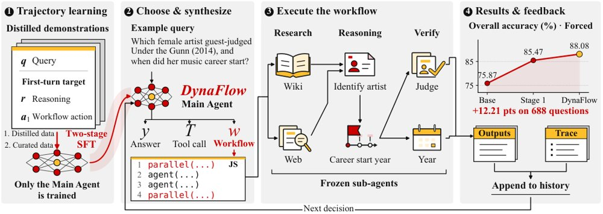
DynaFlow 总览：两阶段 SFT 只训练主智能体，使其在首轮选择直接作答、调用工具或生成 JavaScript 工作流，冻结的子智能体按程序协作，执行结果与轨迹再回灌历史用于后续决策。
解决了什么问题。现有多智能体系统大多依赖预先设计好的角色、通信模式或工作流组件，把同一套协作结构套到所有任务上，会带来不必要的通信、延迟和算力开销。已有的自动工作流方法仍受限制：DyFlow 只能从有限的算子模板里拼计划，MAS-Orchestra 则在一次决策中生成完整协作结构，看不到中间执行结果。作者因此提出「自由编排」：智能体应自行判断何时需要协作，并在解题过程中构造任务专属工作流。
方法。DynaFlow 把「生成可执行工作流」直接加进主智能体的动作空间：每一步可以给出最终答案、调用普通工具，或写一段 JavaScript 程序，用 agent、parallel、pipeline、phase 等原语定义子智能体职责、串并行依赖与中间结果如何传递、聚合和校验。运行时在资源约束下执行程序，把输出与执行轨迹回灌到历史，主智能体据此决定是继续写新工作流还是作答。训练只更新主智能体、子智能体全部冻结：先用教师模型蒸馏出的首轮（推理+工作流动作）做 SFT，再用 LLM 判官筛掉「前提注入」「验证偏置」「信息流缺陷」的样本做第二阶段微调，正文称 Stage 1 用 2,031 条、Stage 2 用 712 条示例。
关键结果。在 688 道题、六个基准上，用同一 Qwen3.5-27B 主干，DynaFlow 在 Forced 模式取得 88.08% 总体准确率，比最强评测基线高 10.90 个百分点，Dynamic 模式为 87.94%。AIME 2024/2025/2026 在 Forced 下均为 100%，PolyMATH 90.50%，GPQA-Diamond 84.85%，HotpotQA 83.50%（Dynamic 为 84.50%）。Dynamic 模式有 47.1% 的题直接作答，平均每题只调用 2.44 个子智能体，比 Forced 的约 4.16 个减少约 41%。工作流分析显示，混合串并行结构占比从 Base 的 3.4% 升到 Stage 2 的 85.6%，显式要求下游使用上游输出的比例从 12.6% 升到 97.7%，重大信息流缺陷从 Stage 1 的 1.9% 降到 0.9%。
为什么值得看。它把「何时协作」和「怎么协作」放进同一个策略里学习，并证明在主智能体训练、子智能体完全冻结的前提下也能大幅涨点，说明编排能力本身可以单独学习、与执行者能力解耦。跨阶段信息传递被单独拎出来作为有效编排的关键维度，对后续多智能体系统的设计有直接参考价值。
局限 / 存疑。实验只训练主智能体、子智能体固定为 Qwen3.5-27B，主干单一，尚未验证更换执行者或联合训练子智能体的效果；GPQA-Diamond 上仍落后于 Self-Refine 与 AFlow，说明科学问答不是稳赢。此外 Stage 1 训练样本数在正文（2,031）与附录（2,257）中不一致，工作流质量与缺陷判定依赖 LLM 判官（deepseek-flash）自动打分，所给材料未报告与人工标注的具体一致率，训练也没有单独验证集。
AI 智能体 Agent / 自主智能
alphaXiv · arXiv
把智能体当「工作系统」：一个统一框架
论文以「工作」为中心给出系统级视角，用工作持续性与工作开放性两个维度刻画智能体的工作条件。
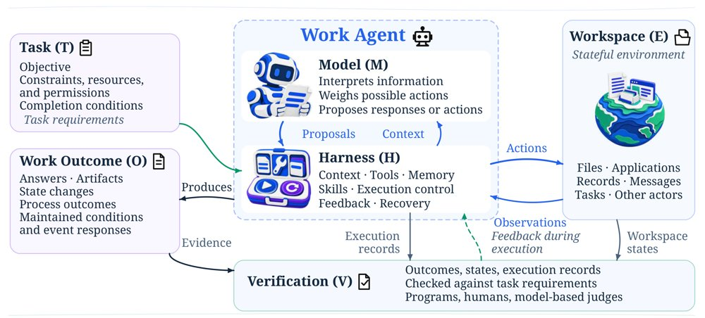
工作智能体的系统视图：模型与 harness 构成虚线框内的工作智能体，任务规定目标、约束、资源、权限与完成条件，产出经程序、人工或模型评判者按任务标准验证并可反馈至后续决策。
解决了什么问题。基础模型正从生成信息转向执行数字工作，智能体已能在多种工具、应用与工作流中完成复杂任务。但现有研究缺少统一视角，来回答智能体究竟如何可靠地完成被委派的工作。论文试图补上这一概念空白，把「工作」本身作为分析单位。
方法。作者把工作智能体定义为「基础模型 + 运行时 harness」的组合：模型负责决策，harness 负责提供上下文、在有状态工作区中执行动作并接收观测。在此之上提出工作持续性与工作开放性两个互补维度来刻画工作条件，并按任务范围与组织方式把数字工作分为五类形态。论文进一步归纳可靠执行所需的五类核心能力，并分别讨论模型优化、harness 优化及两者的联合优化，最后从工作产出的角度梳理评测方法与指标。
关键结果。这是一篇框架性论文，未报告实验或基准分数，论文未给出具体数字。可计数的结构性产出包括：两个刻画工作条件的维度（工作持续性与工作开放性）、五种数字工作形态，以及五类核心能力家族。论文还给出一个系统视图，把任务规格（目标、约束、资源、权限、完成条件）、harness、模型、产出与验证串成闭环，并指出验证可由程序、人工或模型评判者按任务特定标准执行，既可在线反馈也可事后评估。
为什么值得看。它把讨论焦点从「模型能力」移到「模型加运行时」的整机系统，为比较不同智能体系统、定位失败环节提供了共同语言。对做 agent 工程的团队来说，这个框架把 harness 设计、验证机制与持续运行责任放到了与模型同等的位置。
局限 / 存疑。论文是概念与综述性质的工作，没有实证实验或量化对比来支撑五类形态与五类能力的划分，维度和类别的边界是否互斥、可操作仍待检验。此外，验证环节依赖任务特定标准，在开放环境与长周期责任场景下如何落地，论文只作为未来方向提出。
AI 智能体 Agent / 自主智能
AI 工程、推理部署、系统方向
alphaXiv · arXiv
新基准考察智能体对工具生态演化的适应
Δτ-Bench 用 1,588 个多轮任务和六个生态状态，测试智能体能否跟上工具能力的变化。
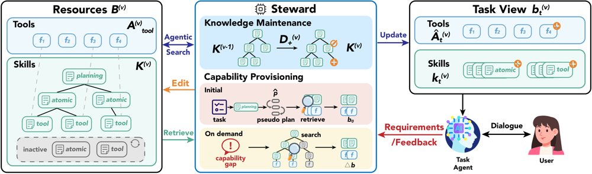
Steward 作为生态管理者维护共享工具与技能资源，并依据规划与检索初始化、再随能力缺口动态更新任务智能体视图的示意图。
解决了什么问题。在大工具生态中，服务会独立演化：常用工具可能消失或被替换，更高效的替代方案会在功能重叠和文档噪声中出现。现有基准未能同时考察智能体主动发现高效工具使用路径，以及及时修正已积累的程序性知识这两类需求。
方法。论文提出可执行智能体基准 Δτ-Bench，用于建模大型工具生态的结构性演化。它包含 1,588 个经验证的多轮任务，覆盖 42 个领域，并通过保持能力的变换生成六个连续生态状态。作者进一步提出生态管理者 Steward，通过增量式技能维护和任务执行中的动态供给，联合管理工具与程序性知识。
关键结果。Δτ-Bench 包含 1,588 个多轮任务、覆盖 42 个领域和六个连续生态状态；最强评估模型或执行框架仅达到 42.3% 的任务成功率。现有技能学习方法带来的初始收益，也不能随生态演化稳定转化为更好的适应能力。Steward 在生态变化中维持了更高的任务成功率，并降低了技能维护开销，同时改善了工作流中断后的恢复和对更高效替代方案的采用。
为什么值得看。它把评估焦点从静态工具调用转向生态演化下的工具发现与程序性知识更新，为构建能持续适应环境变化的智能体系统提供了测试床。
局限 / 存疑。生态变化由保持能力的变换生成，可能与真实工具生态中不规则的下线、文档噪声和竞争关系存在差距；Steward 的提升幅度与跨模型泛化效果论文未给出具体数字。
AI 智能体 Agent / 自主智能
alphaXiv · arXiv
持续学习基准CLE：最强系统仅通过47.7%关卡
50余位专家做出120个五级任务阶梯，17套前沿智能体配置中最好的一套也只通过47.67%的关卡。
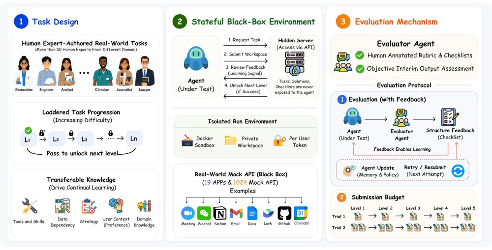
CLE 概览：每个任务由五个前后衔接、靠可迁移知识串联的关卡组成，智能体通过 API 操作有状态应用，评估智能体依据人工撰写的评分细则核验提交结果；K=1 时每关仅一次提交且无诊断反馈，K=2 时首次失败后给出反馈并允许再提交一次。
解决了什么问题。现有智能体基准大多把任务彼此独立地出题和打分，衡量的是单题解题能力，而不是智能体能否靠积累的经验变得更强。记忆类基准（如 LoCoMo、LongMemEval）考察历史信息的检索与问答，不检验记住的东西是否改善了后续任务执行。带持久状态的工作流基准能模拟跨应用连续操作，但状态延续本身并不等于能力随经验增长，要测「越做越好」就需要一条受控反馈下的任务序列。
方法。作者提出 Continual Learning Exam（CLE）：120 个人工撰写并人工审核的任务，每个任务是一个五级阶梯，共 600 关，覆盖 12 个职业领域的 89 种岗位；关卡之间通过工具与技能、数据依赖、策略、用户偏好、领域知识五类可迁移知识相连，后一关建立在前一关的产物与经验之上。环境包含 23,981 个真实输入文件（77 种扩展名）、19 个有状态模拟应用共 1,024 个 API，评分依据 16,125 条人工撰写的细则，由一个多轮评估智能体在隔离容器中取证核验。实验对比两种协议：K=1 每关只能提交一次且无反馈；K=2 首次失败后返回基于细则类别的诊断反馈，并允许修改后重交一次。
关键结果。在 17 套 harness–模型配置上，最好的 Claude Code + Opus 5 在 K=1 下通过 42.17% 的关卡，K=2 下升至 47.67%，完整通关五级的任务仅占 23.33%（28/120）。17 套配置中 16 套在加入诊断反馈与重交后提升，中位增益 5.33 个百分点；Claude Sonnet 5 提升最大，为 13.17 个百分点（完整通关任务从 8 个增至 23 个）。整体上半程与后半程落差明显：K=2 下各配置的关卡通过率中位数在 L1 为 62.50%，到 L5 仅 8.33%；在六个共用基座模型上，Hermes-Agent 相对 OpenClaw 的平均优势从 K=1 的 9.56 个百分点扩大到 K=2 的 11.42 个百分点。评估智能体与人工标注在细则条目级别的一致率为 96.86%，重复三次评分的一致率为 99.46%（553/556）。
为什么值得看。它把「经验复用」从抽象口号变成了可打分的任务阶梯，为后训练和 harness 设计提供了明确的靶子：目前前沿智能体在单关尚可，跨关卡累积经验几乎失效。数据集也可直接用于后训练，以强化模型的持续学习能力。
局限 / 存疑。实验中模型参数全程冻结，测的只是 harness 层面的非参数学习，标题里的「RSI」对应的是论文自设能力分级中的 T4/T5，本次评测并未覆盖。K=1 与 K=2 的对比把诊断反馈和额外重交混在一起，论文自己也指出，仍缺少一个把 harness 重置到初始状态、其余条件固定的对照来分离跨任务知识保留的贡献；此外后期关卡的统计样本很小（K=2 下 L4→L5 的中位分母仅 14 个任务，17 套配置中有 7 套不足 10 个），成本也不低（Opus 5 在 K=2 下单次评测耗资 720.56 美元、58.90 小时）。
基础大模型 & 基础模型底层研究
AI 智能体 Agent / 自主智能
alphaXiv · arXiv
用坑点预判世界模型引导黑盒智能体
PAWM在有限多步未来内预判失败，仅在可能踩坑时介入，以引导黑盒LLM智能体。
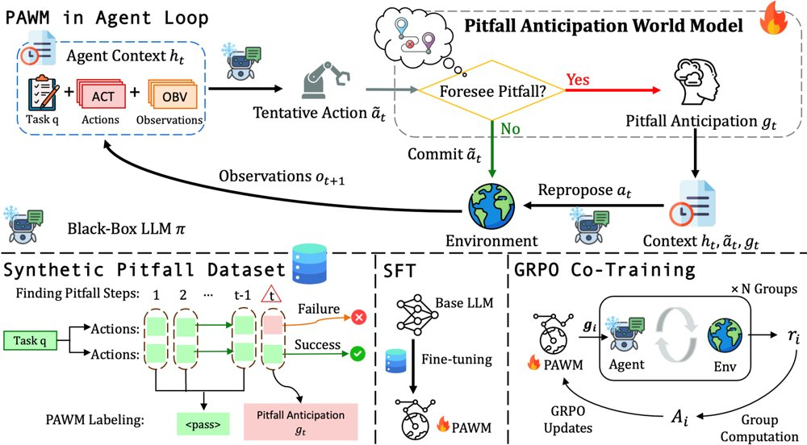
坑点预判世界模型引导黑盒LLM智能体的示意图。
解决了什么问题。黑盒大语言模型智能体擅长长程推理与精确动作生成，但对特定任务环境如何演化缺乏内化知识。已有世界模型通常逐步预测下一观测，成本高且信息有限，因为单步观测提供的任务指导有限，而且并非每一步都需要预见。论文因此追问：面向智能体任务，世界模型应当预测什么、又该在何时被调用。
方法。作者提出坑点预判世界模型PAWM，在有限多步未来内预判潜在坑点，并选择性地在坑点出现时介入，预测即将发生的失败以引导智能体避开。PAWM分两阶段训练：先在带智能体坑点标签的合成数据上做监督微调，再与黑盒LLM进行GRPO协同训练，以在目标环境中进一步优化。
关键结果。以Claude Sonnet 4.5为黑盒智能体时，PAWM在ScienceWorld上提升24.3%，在WebArena-Lite上提升7.7%，并优于多种基线；论文未给出其他基准或绝对分数。
为什么值得看。它把世界模型的用途从逐步预测观测转向选择性预判失败，为黑盒LLM智能体提供了一种更聚焦的环境特定引导方式。若能在更多环境复现，这类介入机制可能降低长程任务中的试错成本。
局限 / 存疑。论文仅在ScienceWorld和WebArena-Lite两个基准上报告结果，跨模型、跨环境的泛化能力仍待验证。选择性介入若漏判坑点可能失效，原文未给出漏判率或额外调用成本。
AI 智能体 Agent / 自主智能
强化学习 RL & 序列决策
alphaXiv · arXiv
LLM智能体20天自建酒馆战棋AI，超越顶尖玩家
六个LLM研究智能体共享研究记忆，20天自建完整模拟器与PPO智能体，天梯分从6000升至约15000。
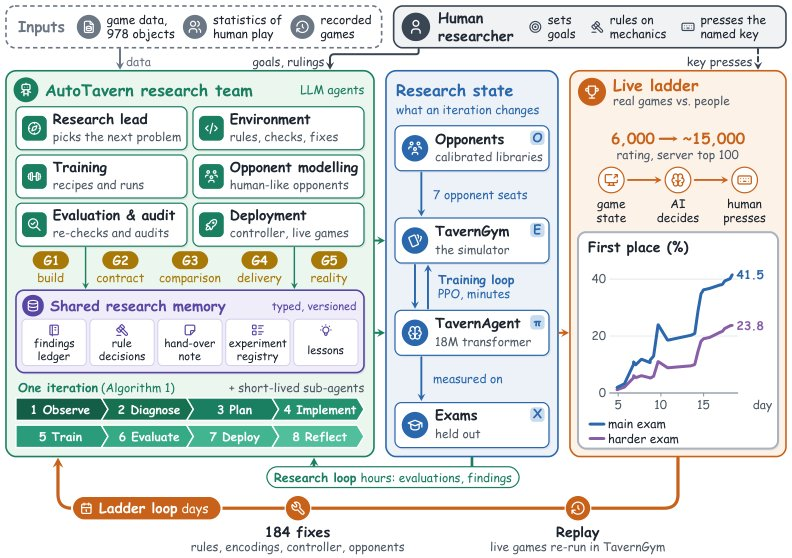
AutoTavern总览：六个LLM研究智能体共享一份研究记忆，运行训练（分钟）、研究（小时）与线上天梯（天）三层循环，图表给出23个交付版本在三个未见种子上的第一名率（每点24,576局）。
解决了什么问题。现有关于LLM科研智能体的证据多来自基准任务或论文评审，尚不清楚它们能否把一个困难的真实问题从原始数据推进到能与人类对抗的系统。炉石传说酒馆战棋是八人自动战斗游戏，商店与战斗随机、存在隐藏信息、近千张卡牌交互，且此前没有忠实复现线上版本的模拟器，已有AI工作要么只给人类建议，要么研究简化版本。
方法。作者提出AutoTavern：环境、训练、对手建模、评估、部署等角色的LLM研究智能体只通过带类型的版本化研究记忆通信，每条结论要先过五道验证闸门，线上天梯对局再把模拟与现实的偏差反馈回规则、输入编码和对手模型。对应地构建了TavernGym（Rust引擎，覆盖36.6.3补丁全部978个游戏对象）与用PPO训练的实体Transformer策略TavernAgent，对手不是自我对弈，而是按人类顶尖玩家统计并在线上对局中逐回合重校准的对手库。
关键结果。20天内系统注册约10,000次实验，交付23个智能体版本，人类只发了418条消息（占全部消息0.6%）。在同一模拟器构建与三个未见种子上，第一名率从TA-1的1.9%升到TA-23的41.5%，平均名次3.40降至2.33（每点24,576局）；天梯上392局内评分从6,000升到14,007，按公开排行榜口径其最近20条记录平均名次1.60、80%第一，而服务器评分最高的十位玩家合计为2.34、59%。TavernBench（960题、40个场景）上，TavernAgent答对91%的对局类任务，最好的直接作答LLM为GPT-6 Astra的63%，Claude两个版本52–53%；每决策耗时0.03秒，而LLM中位1.4–26秒，在一秒实时预算内保持90%，其余LLM最高仅26%。
为什么值得看。它把「LLM智能体做研究」的检验从基准任务搬到有真实对手的天梯上，并给出一个可复用范式：让智能体优化代理指标的同时，用现实反馈和验证闸门防止代理漂移与假结论。同时它表明LLM智能体的产出可以远超其自身的直接决策能力——建得比玩得好。
局限 / 存疑。结论建立在单一游戏、单一补丁（36.6.3）和一次20天运行上，训练对手是校准的对手库而非真人；线上对局由人类按AI指定的键执行，天梯评分也受对局数量影响，与顶尖玩家的比较用的是排行榜根据评分变化估算的名次而非真实对局统计。此外388局有效记录中有96局出现客户端故障，TavernAgent在规则执行类任务上未计分（由TavernGym代答），因此它与前沿LLM在「读懂规则」上的差距并未被这项基准直接衡量。
AI 智能体 Agent / 自主智能
强化学习 RL & 序列决策
alphaXiv · arXiv
PatEx-Gym：专利审查的智能体检索基准
论文构建1K真实专利审查任务与百万级专利检索库，并用PASS合成约3K轨迹训练4B智能体。
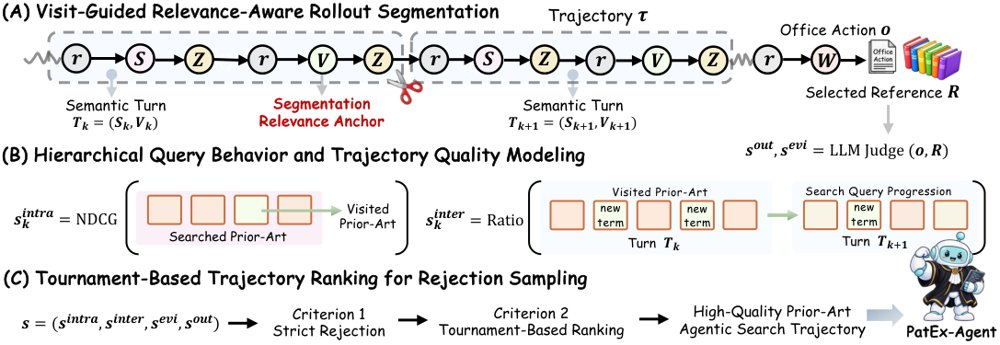
PASS的轨迹合成流程：以访问为锚点切分检索轨迹，分层评估查询行为与证据/结果质量，再经锦标赛排序和拒绝采样筛选高质量轨迹。
解决了什么问题。现有专利审查基准多依赖静态、小规模候选集，或把检索、段落定位与新颖性判断分开评估，难以覆盖真实审查中的完整搜索—推理—评估闭环。真实审查要求智能体从大规模现有技术中自主发现证据、迭代改写查询、检查全文并生成有法律约束的审查意见。
方法。作者提出PatEx-Gym：PatEx-Bench含1,000个USPTO真实审查任务，检索库为1,011,901件专利和52,105篇论文，运行环境提供布尔、BM25、BGE-M3检索及文档访问工具。PASS把文档访问当作隐式相关性与证据获取锚点，对轮内查询、轮间检索进展、轨迹级证据与结果质量分层打分，再用锦标赛排序从10K教师轨迹中筛出约3K条PatEx-SynData。PatEx-Agent以Qwen3.5-4B为底座做监督微调。
关键结果。在PatEx-Bench上，PatEx-Agent-4B的OA质量分为5.41，较底座Qwen3.5-4B的3.79提升42.7%；Search-R从23.2升至38.7，Select-R从12.0升至18.2。最强基线Claude-Opus-5-max的Score为7.34、Search-R为48.7、Select-R为32.4；Qwen3.6-27B决策准确率最高（87.6%），但Score仅5.96、Select-R 19.5，说明最终决策正确不等于检索与审查质量高。NPL检索上，PatEx-Agent的Paper Search-R为69.4，接近Qwen3.8-Max的69.6。
为什么值得看。它把专利审查做成可审计的智能体检索测试床，并显示4B小模型经轨迹筛选与SFT后可在部分检索指标上接近更大模型，对轻量本地部署有吸引力。
局限 / 存疑。论文未单列局限性分析；从设置看，任务仅覆盖USPTO公开记录与1K条审查任务，OA质量依赖3个LLM评委（评委间Kendall W=0.849），训练轨迹来自教师模型合成，向其他专利局、语言和真实审查流程的泛化仍待验证。
AI 智能体 Agent / 自主智能
alphaXiv · arXiv
ProAS：用进度参考图重塑优势，改进多轮智能体R
无critic的GRPO类算法把轨迹级优势平均分给所有动作；ProAS用动态演化的参考图做细粒度信用分配，在ALFWor
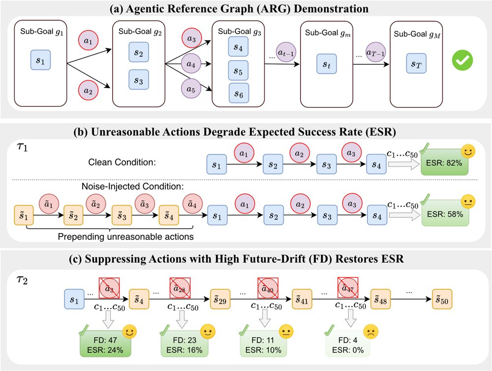
(a) 多条成功轨迹被统一为有向无环图作为进度参考；(b) 同一状态下注入不合理动作后，50次续采样的期望成功率更低；(c) 抑制不同位置的原动作并重采样50次，恢复的期望成功率随该动作Future-Drift增大而上升。
解决了什么问题。GRPO等无critic算法为省去critic开销，把轨迹级优势原样广播给轨迹内每个动作。作者指出这造成「统一信用分配困境」：在正优势的成功轨迹里，结构上不合理的动作也被一并强化；在负优势的失败轨迹里，又无视各动作对后续偏差的实际影响。
方法。ProAS维护一个动态演化的Agentic Reference Graph（ARG），把成功轨迹抽象为按子目标排序的有向无环图，并据此给每个动作打上「合理」与「推进进度」两个二值标签。对正优势轨迹，MUI把不合理动作的局部优势置零；对负优势轨迹，APR按Future-Drift（该步起后续非推进动作的累计数）归一化后重新分配惩罚。整个框架即插即用，不需要critic或额外奖励模型。
关键结果。在Qwen2.5-1.5B-Instruct和7B-Instruct上，GiGPO+ProAS在ALFWorld取得91.9%和94.3%的成功率；WebShop上DAPO/GiGPO+ProAS（1.5B）与GRPO+ProAS（7B）分别达到66.7%和70.8%。GRPO+ProAS把1.5B模型在ALFWorld上的成功率从70.3%提升到87.0%（+16.7个百分点），训练收敛加速1.12×至2.44×。作者统计，不合理动作占成功GRPO轨迹的41.6%（ALFWorld）和39.6%（WebShop），非推进动作占失败轨迹的93.1%和76.1%；注入四步不合理历史使期望成功率从82%降到58%，而抑制Future-Drift为47、23、11、4的动作后，恢复的期望成功率分别为24%、16%、10%和0%。
为什么值得看。它不引入critic、也不改RL主干，就能普遍抬高GRPO、DAPO、GiGPO的成功率并加快收敛，对算力有限又缺少逐步标注的智能体训练场景有直接吸引力。
局限 / 存疑。ARG质量是关键：换成随机标签会让ALFWorld成功率相对ProAS下降39.3个百分点，关闭在线演化（静态ARG）也使ALFWorld从87.0%降到82.8%，且ALFWorld上实际训练时间略有增加。此外，支撑MUI/APR的干预分析基于单条轨迹、每点50次续采样，作者自己也说明这只能作为诊断趋势的证据，并非普遍因果效应的估计。
基础大模型 & 基础模型底层研究
AI 智能体 Agent / 自主智能
强化学习 RL & 序列决策
alphaXiv · arXiv
可复用验证器基准：把测试与执行后果连起来
97个任务、79个族、四个Web服务：新基准把冻结验收程序的配对测试，与其判决之后的执行结果连成一条可复现的链。
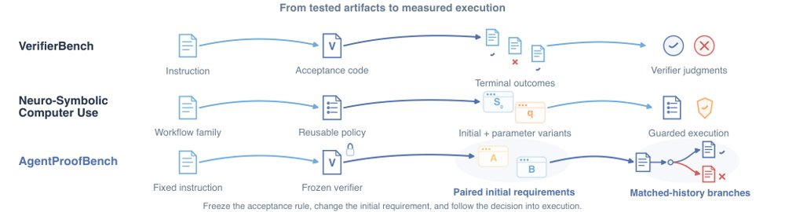
图中对比三类相关工作设置与本文的测量单元：配对的初始状态需求检验冻结的验收程序，匹配的历史则把它的判决与后续执行连起来。
解决了什么问题。Web agent 的验收检查往往被写成一段可复用的程序，但公开指令不变时，真正需要满足的条件会随每次执行的初始业务状态改变——名字当前归谁、集合里有哪些文件、哪个值必须保留。记住旧答案的验证器会给出看似可信、实则针对错误需求的判决，而它的判决又会反过来改变后续执行（拒绝触发修改、通过则放行结果状态）。现有 Web agent 环境只做可执行的任务评测，没有把「验证器是否跟得上初始状态变化」与「它的决策导致什么执行后果」放在同一个测量框架里。
方法。作者构建 AgentProofBench：每个任务给出公开指令、API 文档与普通认证接口，验证器以 verify(task, before, after) 形式返回 Pass/Fail/Unknown，在只读沙箱中运行冻结源码。研究分三块：97 任务 79 族的验收资源（556 个自然状态，452 成功/104 失败）；48 族的配对复用测试，固定指令与程序、只改初始状态绑定，并用「源决策见证」检验旧判决在新条件下是否应失效；22 族的执行研究，从 88 个保存的开局出发比较四种停止策略（actor 自停、固定续跑、程序门控、在线门控）。所有数字来自 DeepSeek Flash/Pro，关闭 thinking。
关键结果。配对复用研究跨 48 族：源程序在相关状态上的平衡准确率为 Flash 93.23%、Pro 90.36%，复用减重建的区间分别是 [-5.47, 1.57] 和 [-10.16, 0.00] 个百分点，两者都包含零。主面板与见证都正确的联合正确率为 82/96（Flash）与 79/96（Pro），重建程序为 82/96 与 86/96。执行研究里，相关面板无错误的 33 个程序赋值中有 32 个把两个开局都正确交付，而面板含错误的 11 个赋值中只有 1 个，对应正确交付率差 87.9 个百分点，区间 [68.8, 100.0]；全部 17 次程序门控扣留与 3 次参考定义的回归都落在面板出错组。中性续跑在测试的通用反馈中正确交付最高：Flash 20/22、Pro 22/22，而程序门控为 17/22 与 16/22。成本方面，构造费用中位数为 0.0173/0.0765 美元，API 费用盈亏平衡点中位数为 Flash 12 次、Pro 10 次评估。
为什么值得看。它把「验证器生成」的评测从单次固定实例推进到初始状态变化加执行后果两个层面，并给出可直接复用的任务、状态、程序、参考规则与轨迹，使验证器的复用价值第一次能被端到端归因到某次被放行或扣留的交付。中性续跑作为强基线也提醒：门控带来的增益必须超过「什么都不拦」才有意义。
局限 / 存疑。实验只覆盖 DeepSeek Flash/Pro 两个模型且关闭 thinking，结论能否外推到其他模型未知；配对复用的两个预设区间都包含零，即未证明复用优于重建。面板正确性与交付结果的关联被作者明确标为对冻结赋值的探索性分析，支撑单元只有 44 个程序赋值、来自 22 个族，效应量虽大但样本结构受限。
AI 智能体 Agent / 自主智能
alphaXiv · arXiv
递归自我改进的可信性：框架与评估难题
一篇综述为递归自我改进给出可操作定义，把可信性拆成四类要求与三个分析视角，并主张用跨版本纵向证据来检验。
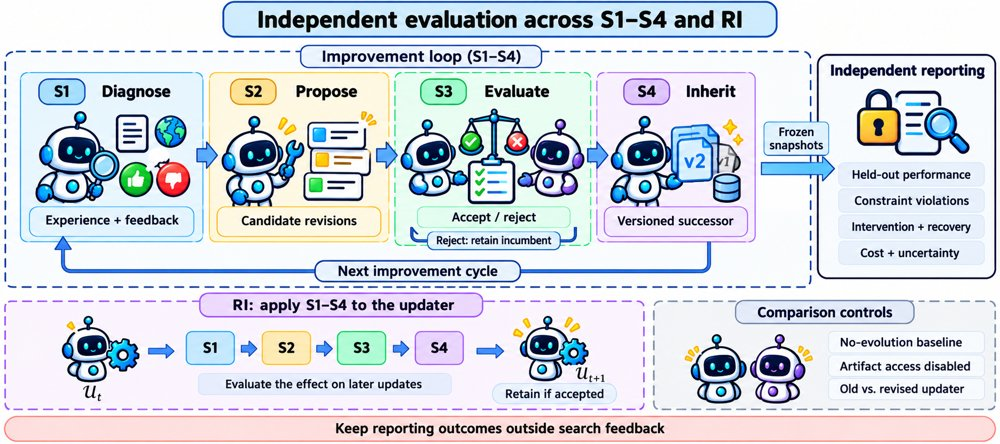
纵向评估设计示意：RI 将 S1–S4 作用于更新函数 U，因此必须评估后续各版本；报告结果不进入搜索反馈，且不同对照回答的是不同问题，仅做产物访问消融并不能隔离更新器本身的效应。
解决了什么问题。围绕大模型构建的系统正越来越多地用经验与反馈对模型、提示、记忆、工具和工作流做持久修改，递归自我改进（RSI）则把这种修改扩展到归纳偏置乃至「负责后续更新的机制」本身。但自我修改并不等于可信的改进：报告中的收益可能来自有缺陷的评估，已有能力可能退化，行为约束的遵从性可能减弱，被污染的数据或敏感信息也可能残留在后继系统中。更麻烦的是，对改进机制的改动会让此前的验证结果失效，并削弱人类监督的有效性。
方法。作者先给出 RSI 的操作性定义与过程框架：把一次完整改进周期拆成诊断、提案生成、提案评估、更新实施四个阶段（S1–S4），并把这一循环递归地施加到改进机制本身（RI）。在此之上，他们把可信 RSI 的要求整理为四类相互关联的主题——真实且可持续的改进、行为约束与对齐公平、系统安全与隐私、透明性与可控性——并通过改进有效性、约束保持、有效监督三个分析视角来审视。文章分别讨论单次更新的风险、后继系统继承的效应、以及改进机制被修订这三类情形，并明确区分「RSI 的直接发现」与「来自相关系统的证据」。
关键结果。作为综述，论文未给出具体实验数字，其贡献是结构与评估规范：四阶段改进循环（S1–S4）加递归修订（RI）、四个可信性主题、三个分析视角，并在表 8 中列出覆盖八个要求组的纵向检查清单。作者对评估协议提出可操作要求：把单项要求的满足与「同一轨迹上的联合满足」分开报告，联合判据要求每个强制要求在声明时间范围内的每次计划评估中都成立；若中间版本出现一次未授权披露，即便首尾版本都通过，整条轨迹也判为失败。论文还要求报告满足联合判据的独立运行比例及其不确定性，未完成的联合评估须标注为「未评估」。
为什么值得看。它把「系统能改自己」和「改得可信」明确拆开，并给出可执行的报告口径：单次更新的成功、后继系统的表现、改进机制本身的修订，分别只能支撑不同强度的结论。对做自改进、持续学习与智能体工程的团队来说，这套分层的证据要求可以直接当作评估设计的检查表。
局限 / 存疑。论文是综述性质，未给出具体实验数字，框架本身尚缺实证校准；作者也承认，把 RSI 的直接发现与相关系统中的间接证据区分开来本身就有难度，公平性跨版本、纠正或删除后的隐私保持等要求仍被列为后续评估重点。此外，「联合判据在整条轨迹上始终成立」这类要求在现有公开实验中往往只能标注为未评估。
基础大模型 & 基础模型底层研究
alphaXiv · arXiv
Qwen-Image-PE：让提示词学会视觉设计
两阶段训练把「设计」变成提示增强的学习目标：397B版本在Qwen-Image-Bench上比原始请求高7.81分。
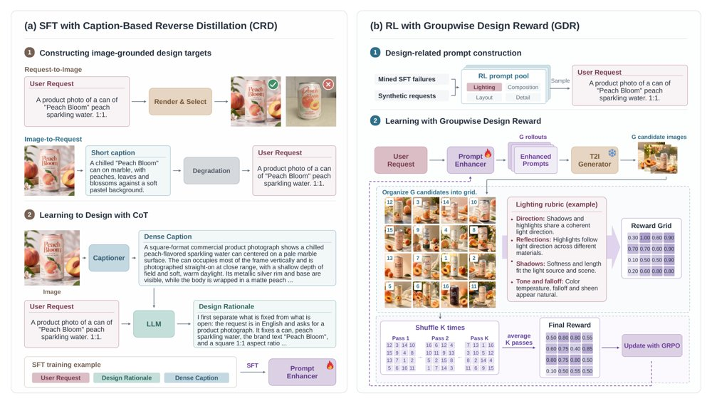
同一请求下，使用增强后提示（右）生成的图像相比原始请求（左）在光照、构图、版式与细节上更具表现力。
解决了什么问题。用户给文生图模型的请求往往很简短，光照、构图、版式、细节这些视觉设计选择大量留空，而提示增强（PE）在补全这些选择时几乎决定了画面如何呈现。现有提示增强方法主要保证语义对齐，或用美学/偏好奖励优化整体观感，对单个设计维度的显式建模不足。论文因此追问：如何把细粒度视觉设计转化为可用的监督信号与优化反馈。
方法。作者提出Qwen-Image-PE，采用两阶段训练。第一阶段是「基于描述的反向蒸馏」（CRD）：先用强文生图系统生成或筛选高质量图像，再用多模态模型为图像写稠密描述，把描述（连同LLM合成的设计思路CoT与长宽比）作为增强提示的监督目标，让增强器学习模仿优秀图像中的设计选择。第二阶段用「组内设计奖励」（GDR）做强化学习：对同一请求采样多条增强提示并渲染成图，把整组候选图拼成网格，由多模态裁判按光照、构图、版式、细节四项评分标准一次性联合打分，多次打乱顺序取平均，再与对齐奖励加权，用GRPO优化增强器，同时冻结文生图主干。
关键结果。在Qwen-Image-Bench、以Qwen-Image-2.1为冻结主干时，Qwen-Image-PE-397B的Overall为62.17，比原始请求54.36提升7.81分；Qwen-Image-PE-9B为60.28，超过所有对比的提示增强基线（GPT-5.5为60.10，FLUX 3 Image Klein PE为59.90）。人类GSB评测（500例）中397B对原始请求的净胜率为35.48%，对GPT-5.5为17.09%。消融显示CRD相比前向式监督把Overall从59.86提升到61.52（+1.66），GDR相比逐点奖励从61.36提升到62.17（+0.81），与人判断的一致率为59.1%对50.9%。缩放实验中，训练数据从12.5K增到100K使Overall从55.87升到57.61（+1.74）；模型从2B到397B-A17B从49.56升到59.86（+10.30）；信息密度L1到L4从44.65升到57.31（+12.66）。在另外四个主干上，9B与397B分别带来2.53–6.74和3.86–8.03的Overall提升，并在HunyuanImage-2.1与FLUX 3 Image Klein上分别超过原生增强器3.07和2.74分。
为什么值得看。它把「视觉设计」从模糊的审美偏好拆成可监督、可奖励的四个维度，并给出了一条从图像描述反向蒸馏加组内比较的可复制训练路线；信息密度是有效增强前提这一发现，也直接提示了提示增强的数据构造比堆量更关键。
局限 / 存疑。评测主要依赖自动基准与MLLM裁判，而GDR奖励与人类判断的一致率仅59.1%，说明奖励信号本身并不可靠；人类评测只覆盖397B且仅500例，开源的只有9B。信息密度实验还显示L1、L2两档（Overall 44.65、51.36）反而低于不增强的54.36，数据缩放从50K到100K增益也已降到0.30分，说明方法的收益高度依赖高质量描述数据且存在递减。
生成式 AI
计算机视觉 CV
alphaXiv · arXiv
先漂移后扩散的一步生成策略
DriftSpread 用 critic 梯度做 Drift、用噪声分布匹配做 Spread，在 MuJoCo 上以一步

DriftSpread 概览：(a) 训练在 critic 学习与顺序 Drift–Spread actor 更新间交替；(b) 示意负 MaxEnt 目标下 Drift 提升 critic 值、Spread 扩展分布以体现熵。
解决了什么问题。扩散和流策略能表达多峰动作分布，但推理常需多次网络评估，训练和部署成本高。在线最大熵 RL 还需处理熵项，而隐式生成策略没有可处理的密度，难以直接计算熵或策略 score。
方法。作者提出 DriftSpread：从负 MaxEnt 目标推导出 critic 引导的 Drift 和熵诱导的 Spread，并在同一个一步 actor 上顺序执行。Drift 用动作回归把样本沿 critic 梯度移动，Spread 用 MMD/特征函数匹配带噪分布来近似熵扩散，因此不需要从 Boltzmann 目标直接采样，也不需要密度或 score 估计。
关键结果。在五个 MuJoCo-v3 任务、每个任务 100 万环境交互、5 个随机种子下，DriftSpread 在 13 个基线中取得最高聚合归一化回报；平均推理为 0.15 ms/动作，低于 DIME 的 1.24 ms 和两步 MeanFlow 策略 MFPO 的 0.36 ms。作者还报告其训练成本低于扩散、流和 MeanFlow 基线。
为什么值得看。这为在线 MaxEnt RL 提供了一条兼顾表达性与一步推理的生成策略路线，尤其适合对动作生成延迟敏感的控制场景。
局限 / 存疑。局限是只在 MuJoCo 仿真中评估，未验证真实控制任务；理论收敛依赖固定 critic、精确拟合和小步长/长时间极限，Spread 噪声分布与尺度在训练中也固定。
生成式 AI
强化学习 RL & 序列决策
alphaXiv · arXiv
3D 接地潜在动作统一异构视频预训练
RynnVLA-Latent 从 30.1K 小时人类、机器人与仿真视频中提取 745.52M 潜在动作描述子，用流匹配
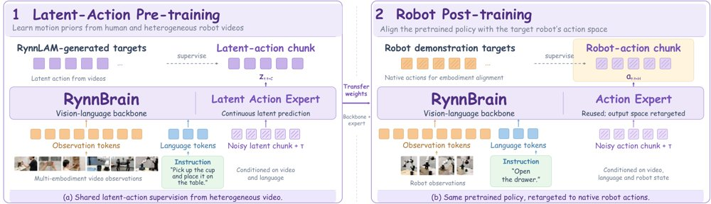
RynnVLA-Latent 的两阶段训练流程：(a) 潜在动作预训练，策略从观测与语言预测 RynnLAM 提供的共享转移描述子；(b) 机器人后训练，复用预训练主干与动作专家躯干，将输出投影重定向到原生机动作并引入本体感知。
解决了什么问题。扩展视觉-语言-动作模型受限于两点：带动作标注的机器人演示稀缺，且不同本体的控制空间在维度、坐标系和语义上互不兼容。人类与网络视频提供了更广的交互覆盖，却没有对应的机器人指令，因此无法与机器人数据简单合并在同一个原生机动作预测目标下训练。作者认为需要一个与本体无关的共享监督接口，先在视频上学到运动表示，再适配到具体机器人。
方法。RynnLAM 把相邻帧对编码为 8 个运动 token、64 维全局动作潜在和 32 维相机潜在，合成 608 维描述子；训练目标包括残差未来特征预测、相机补偿的 3D 场景流伪标签、对比式特征 warp、相机位姿解码，以及用梯度反转把自运动从动作潜在中分离。RynnVLA-Latent 采用 Mixture-of-Transformers 结构，把 RynnBrain 视觉语言主干与较窄的动作专家耦合，用流匹配从多视角观测和语言预测长度为 6 的潜在动作块。机器人后训练复用预训练主干与动作专家躯干，只把输出投影重定向到目标机器人的动作维度并引入本体感知，不额外添加潜在到动作的解码器。
关键结果。作者用 RynnLAM 离线标注 25 个视频源、约 30.1K 小时、3.057B 帧，得到 745.52M 个潜在动作，策略训练索引含 121.06M 样本。在 LARY 低层控制回归探针上，完整描述子的平均 MSE 为 0.27（绝对）和 0.38（相对），优于 DreamDojo（0.55）、Moto（0.77）和 LAPA（0.93）的相对结果，但 DreamDojo 在相对 CALVIN 上更好（0.35 对 0.40）。4B 策略在 LIBERO 上达到 98.8%、LIBERO-Plus 上 84.7%（未做基准特定适配）、VLABench 五个 track 平均成功率 51.9%、RoboTwin 2.0 Native 协议平均 88.6%（Clean 88.7%、Randomized 88.4%）。真实世界六个任务每个 35 次试验，4B 变体在全部六项上为所比方法中最高，例如 Table-Cleaning 从 π0.5 的 25.71% 提升到 40.00%，Steak-Serving 从 40.00% 提升到 57.14%。
为什么值得看。它把“无动作标签视频”变成可直接用于策略预训练的连续监督信号，并让预训练目标与具体本体解耦，只在最后的后训练阶段引入原生机动作和本体感知。这为在动作标注昂贵、本体异构的条件下扩展机器人基础模型提供了一条可操作的路径。
局限 / 存疑。深度、相机位姿与光流都是估计出的伪标签，因此几何监督并不保证度量准确，也不保证相机运动与操作信息被完全分离；LARY 探针只衡量可预测性，解码出的 3D 流也只是定性解释，不能证明动作可辨识。性能仍随任务和扰动类型波动（例如相机与机器人初始状态扰动下不如 π0.5），部署仍需目标本体的动作标注演示；此外论文对 RoboTwin 结果的表述不一致，正文与表格给出 88.6%，结论段写 88.3% 并称仍低于最强基线，与表 6 中 88.6% 为最高值相矛盾。
基础大模型 & 基础模型底层研究
计算机视觉 CV
机器人 & 具身智能
alphaXiv · arXiv
可执行计划加自蒸馏：空间音频生成与编辑
把声源内容、时序与轨迹写成可执行计划，再合成空间声场；编辑时计划指明改什么、留什么，参考音频补齐细节。
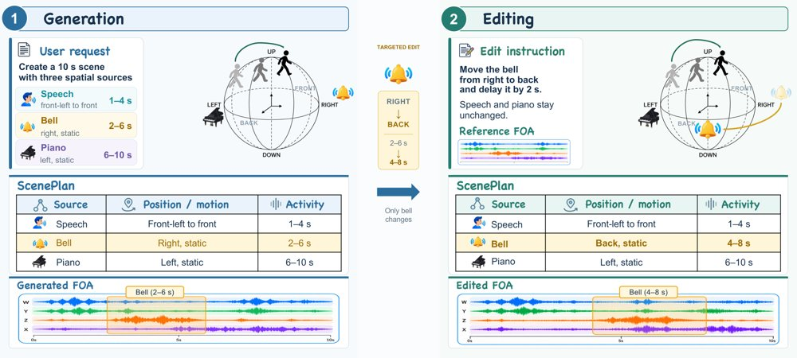
图示系统能力总览：(1) 由文本生成多声源 3D 场景，可控内容、时序与轨迹；(2) 指令引导的空间与时间编辑，只修改选中声源并保留未改动内容与空间结构。
解决了什么问题。空间音频创作要同时决定每个声源发出什么、何时活跃、如何移动，并把这些决定落实为一个连贯的多声道声场。编辑则在此之上再加一条约束：改变选中声源的属性时，必须保留周围声源及其空间结构。论文认为，声源层面的决策与多声道合成不应分开学习，而应由一份可执行计划统一约束。
方法。系统把「可执行计划」作为生成与编辑的共同接口：自回归规划器预测声源级字段（内容、时序、轨迹），解码端在一阶 Ambisonics（FOA）潜空间合成声场，VAE 编码器/解码器负责波形与潜变量的往返。编辑时，计划在语义与结构层面同时声明要改的与要留的，参考音频经编码后提供符号字段之外的残余声学细节，用于保住未改动声源。论文标题中的「self-distilling transfusion」是合成骨干，但材料只描述了规划器与 VAE 层面的设计，具体的自蒸馏机制未展开。
关键结果。训练数据为 160 万条合成与录制的 FOA 样本、外加 100 万对编辑数据，覆盖语音、音乐与环境声；评测使用 8k 生成基准与 5k 编辑基准，VAE 单独在 2000 条 FOA 片段上评估。内容质量方面，Ambit 的词错率/字错率（WER/CER）低于 Qwen3-TTS，但 UTMOS 也更低，作者将其解释为源描述与逐字转写提升了语义与词汇保真，而感知与分布排序各有胜负。轨迹控制基准中，初始距离落在 [2.2, 3.25) 米，线性接近或远离使距离增减 [0.75, 1) 米，自由径向运动则保持距离不变。
为什么值得看。把编辑意图显式写成可执行计划，使「只改一个声源、其余原样保留」成为可检查、可度量的操作，对沉浸式媒体、虚拟声学与交互式声场制作是实用的中间表示；计划本身也可当作评估空间音频可控性的接口。
局限 / 存疑。材料给出的结论段落中没有明确的局限讨论，无法引用作者自述的不足。从数据看，语义指标（WER/CER）改善伴随感知质量（UTMOS）落后于 Qwen3-TTS，保真与自然度之间存在权衡；轨迹评测又限定在 2.2–3.25 米等规则化区间内，真实场景与复杂运动的泛化仍未验证。
生成式 AI
语音与音频 AI
alphaXiv · arXiv
让大模型在发现过程中自建科学原理
Principia 让大模型在测试时从累积观测中构造假设与原理，论文称在优化任务上以少 55% 的实验预算达到相当性能。
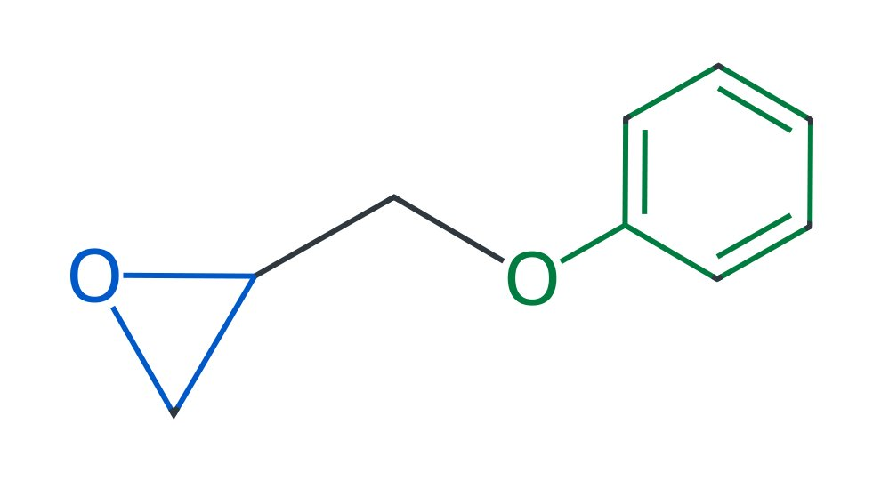
原文未提供图注；图 1 示意人类研究者从单条观测提出假设、把反复出现的关系归纳为原理，并在新观测下重新评估的迭代发现循环，该环节正是论文所指的瓶颈。
解决了什么问题。在药物发现等复杂场景中，支配系统的科学原理往往未知，研究者只能从逐步积累的实验观测中归纳出经验原理，再用这些原理指导后续实验。但这一「假设到原理」的翻译过程高度依赖领域专家，耗时耗力，成为科学发现流程中的瓶颈。现有 LLM 自动化研究多集中在想法生成、实验设计与候选优化，如何从不断累积的观测中构建并持续修正原理仍缺乏探索。
方法。Principia 不再依赖单条输入与其结果，而是把相关输入及其实验结果放在一起比较，利用它们的共性与差异缩小候选解释范围，从而生成因果假设。在原理构建阶段，它把相关输入分组，并将各组假设中反复出现的关系归纳为原理；这些假设与原理通过检索用于后续预测或优化，产生新的观测。新观测再被用来修正已有假设并重建原理，使知识在测试时的发现过程中持续演化。
关键结果。论文称，与「经验总结」（experience-summary）基线相比，Principia 在达到相当优化性能的同时将实验预算减少 55%。分子优化任务从 ZINC 池中预采样 200 个分子出发，每代最多生成 100 个后代，总预算为 1,000 次不同的 oracle 评估；蛋白序列任务从 48 条序列（含野生型）出发，预算为 200 次评估；基因任务中 Scharenberg22 与 IFNG 的 oracle 预算分别为 192 和 768 个不同基因。评价指标包括 AUC@10 与 Avg@100（序列任务为 Avg@50），定性分析称构建的假设能捕捉输入与实验结果之间的关系，归纳出的原理与已有文献一致。
为什么值得看。如果把「从观测到原理」这一步也交给模型，并在测试时随新数据不断修正，自动化科学发现就有望从单点候选优化扩展到可累积、可修订的知识构建，而不必每一步都等待专家解读。
局限 / 存疑。所提供的材料在方法定义处即被截断，完整算法、基线设置与统计显著性均未给出，55% 的预算节省也仅针对单一经验总结基线，缺少与其他知识增强方法的系统对比。评测集中在分子、蛋白序列与基因等计算基准上，未涉及真实湿实验，「原理与文献一致」也只是定性陈述，论文未给出具体数字。
时序数据 & 科学 AI
alphaXiv · arXiv
跨层共享码本，PLE 压缩百倍仍保 97.8%
研究者提出 OPTIC：每个 token 只存一个量化码元组，各层用专属仿射解码器还原 PLE 行，并按输出路径拟合。
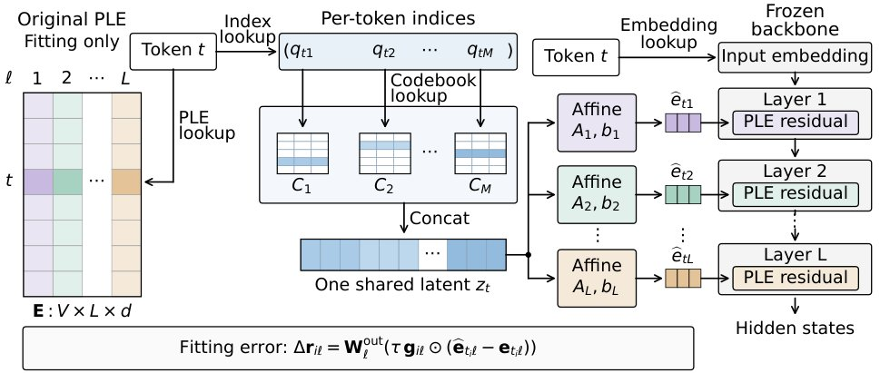
每个 token 只存一个共享码元组，各层专属仿射解码器据此还原本层 PLE 行；同色表示对应层，省略号表示略去的层与码本。
解决了什么问题。Per-Layer Embeddings 为词表中每个 token 在每一解码层都存一个向量，Gemma 4 E4B 中 PLE 占模型参数的 35.2%，E4B 共约 1100 万个 token–层向量、宽度 256。在约 100 倍压缩下，每个向量平均只剩约 5 字节，传统量化器要给每个 token–层向量单独分配一份极短的码，难以保真。
方法。OPTIC 把同一 token 在所有层的 PLE 向量表示为一个跨层共享的量化码元组，每层再用一个专属仿射解码器把它映射回本层的 PLE 行，因此码的存储不再随层数增长，而解码器不随词表增长。码本与解码器不拟合存储向量本身，而是在 PLE 经门控与输出投影之后的路径上最小化误差；训练在连续更新码本、解码器与离散重分配码字之间交替，并用输出路径加权的 PCA 与 OPQ 特征值分配做初始化。
关键结果。在约 100 倍 PLE 压缩下，BF16 E4B 保留七项基准聚合性能的 97.8%，六种常规基线中最强的乘积量化仅保留 66.3%；官方 W4A16 版本上 OPTIC 保留 96.9%，最强基线为 82.8%。在 594 倍和 1002 倍压缩下，BF16 E4B 仍分别保留 90.5% 和 84.1%；同等存储下，逐向量独立隐码只保留 79.3%。E2B 上 BF16 与 W4A16 分别为 89.1% 和 91.5%。在 RTX 4090 上以固定 KV cache 推理时，BF16 E4B 的 GPU 内存降低 29.7%，最慢仅增加 0.40% 的实际耗时。
为什么值得看。嵌入容量正成为独立于计算规模的扩展维度，PLE 这类按层展开的查表会持续推高参数与显存占比；OPTIC 表明可以在几乎不掉点的前提下把这块存储压掉两个数量级，并与骨干权重量化互补。
局限 / 存疑。实验只覆盖 Gemma 4 E2B 与 E4B，主比较和关键消融使用单一拟合种子，配对 bootstrap 区间只反映基准采样不确定性。此外，在匹配字节预算下取消跨层码共享会同时改变码与解码器之间的字节分配，因此该消融测的是组合效应；基线方法均为作者对 PLE 场景的改编，且单个低样本任务可能强烈影响聚合保留率。
基础大模型 & 基础模型底层研究
AI 工程、推理部署、系统方向
alphaXiv · arXiv
miniTE诊断NVFP4强化学习执行差距
同权重、同格式下，学习器与采样器的NVFP4执行差异仍会放大log概率尾部，影响RL策略评估。
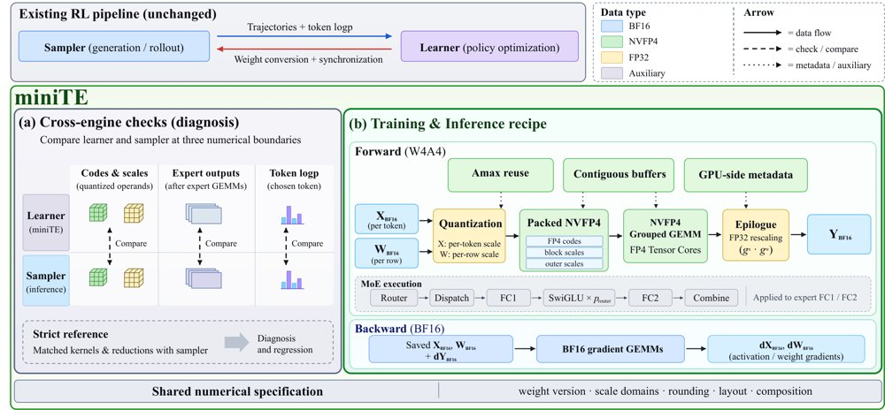
图：miniTE的数值规格与高效执行；(a) 在操作数、专家输出和策略边界做跨引擎比较并设严格执行参考，(b) 打包W4A4专家前向、FP32 epilogue重缩放与基于高精度保存操作数的BF16反向。
解决了什么问题。LLM强化学习在采样器与学习器两个引擎上执行策略评估；即便权重和NVFP4量化格式一致，算子组合、缩放域与归约顺序不同仍会造成跨引擎数值差异，并通过重要性比和裁剪进入优化。现有工作多关注量化格式或路由一致性，未充分暴露完整执行路径。
方法。miniTE把执行规格显式化：记录缩放域、舍入、布局及cast/router位置，提供严格执行参考和算子参考两类诊断。其默认学习路径采用逐token激活缩放的W4A4专家前向、FP32 epilogue重缩放和保存高精度操作数的BF16反向，并把量化与grouped GEMM作为连续数据流联合优化。框架不修改RL目标，可替换专家算子并复用诊断接口。
关键结果。在Qwen3-30B-A3B上，冻结策略诊断显示NVFP4下|δ_num|的P99从BF16的0.1271 nats升至0.2911，配对增加0.1641（95% CI [0.1311, 0.2005]）；仅数值比值超出裁剪范围的token占1.203%，BF16为0.627%；严格执行参考的跨引擎log概率差约10^-8。长程RL第999步，miniTE五任务均值56.35%，高于naive NVFP4的54.57%，低于BF16的58.84%；AIME24/25分别比naive NVFP4高10.00和3.88个百分点，MATH-500高0.55，GSM8K高0.08，但IFEval低5.59个百分点。八卡B300上完整学习器更新达33,540 tokens/s，为BF16的1.39倍、TE NVFP4的1.47倍；同配方专家前向相对TE U3045几何平均加速2.46倍（1.587–3.065倍）。
为什么值得看。它把低比特RL的瓶颈从“位宽是否匹配”推进到“跨引擎执行是否一致”，并给出可复用的诊断边界与内核实现。对需要同时跑采样与训练的MoE RL系统，这提供了一条在不改RL目标的前提下获得原生FP4吞吐的工程路径。
局限 / 存疑。实际路径的平均评测仍比BF16低2.49个百分点，且IFEval明显落后naive NVFP4；作者也指出剩余质量差距无法区分量化误差与残余执行差异，实验仅覆盖一个MoE模型、每种配置单次运行和Blackwell硬件。共置RL测量中权重转换/同步从9.94 s升至55.26 s，两阶段合计97.82 s对56.98 s，但未覆盖完整迭代，不能据此判断端到端加速；模块级前向+反向还有7/8个单元慢于BF16。
基础大模型 & 基础模型底层研究
强化学习 RL & 序列决策
AI 工程、推理部署、系统方向
alphaXiv · arXiv
免训练EOS-Story：兼顾身份一致与场景适配
研究者提出免训练框架EOS-Story，从文本与视觉两个空间入手，让视觉叙事在保持角色身份的同时贴合每个场景的语义与构图
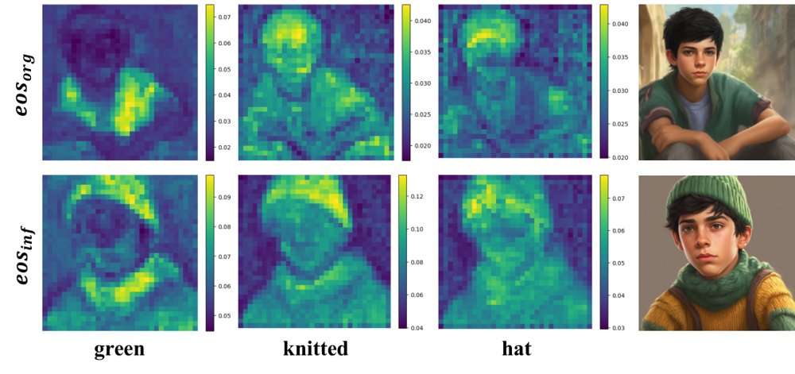
EOS-Story 流程图：跨上下文桥接在文本空间注入外观残差，自适应身份保持负责尺度对齐与特征融合。
解决了什么问题。现有视觉叙事方法主要聚焦角色身份保持，却难以适配多样的场景变化，导致语义错位与结构僵化。具体来说，长提示词被整体编码会使细粒度外观信息被稀释，而身份特征的空间盲目注入又忽视了各场景的构图与主体尺度。
方法。EOS-Story 在文本空间把叙事拆分为身份子提示与场景子提示，并把身份提示相对共享锚点的短语级外观残差注入场景的⟨EOS⟩嵌入，从而既不稀释场景语义，也不丢失外观线索。视觉空间则用身份锚定将身份特征缩放到与场景主体一致的尺度，再通过身份感知自注意力完成融合。整个框架无需训练，基于 SDXL-base-1.0，去噪步数设为 50。
关键结果。在 Consistory+ 上，EOS-Story 的 CLIP-T 为 0.9042、DreamSim 为 0.2005、ImageReward 为 1.1680，优于 1P1S 的 0.8871/0.2132/0.8289 与 Consistory 的 0.8868/0.2355/0.9814；CLIP-I 为 0.8850，低于 IP-Adapter 的 0.9398。在扩展基准 Consistory+_+ 上，CLIP-T 达 0.8998、ImageReward 为 1.3217。20 名参与者、40 个故事板的用户研究中，该方法在 52.8% 的情况下被选为最佳。
为什么值得看。视觉叙事是数字漫画与角色动画的基础应用，这项工作指出场景适配与身份保持同样关键，而且免训练设计便于直接接入现有 SDXL 生成流程。
局限 / 存疑。身份掩码依赖交叉注意力图，偶尔会定位到无关区域，作者建议显式引入主体掩码作为附加条件；此外，跨上下文桥接依赖 CLIP 的⟨EOS⟩语义汇总特性，无法直接迁移到 T5 或 LLM 文本编码器的模型。
生成式 AI
计算机视觉 CV
alphaXiv · arXiv
评卷式强化学习：补上精确率即可抑制刷分
rubric 覆盖率奖励只相当于召回目标，模型学会堆砌冗长内容；Fork 把精确率并入奖励，RubricHub-Medi
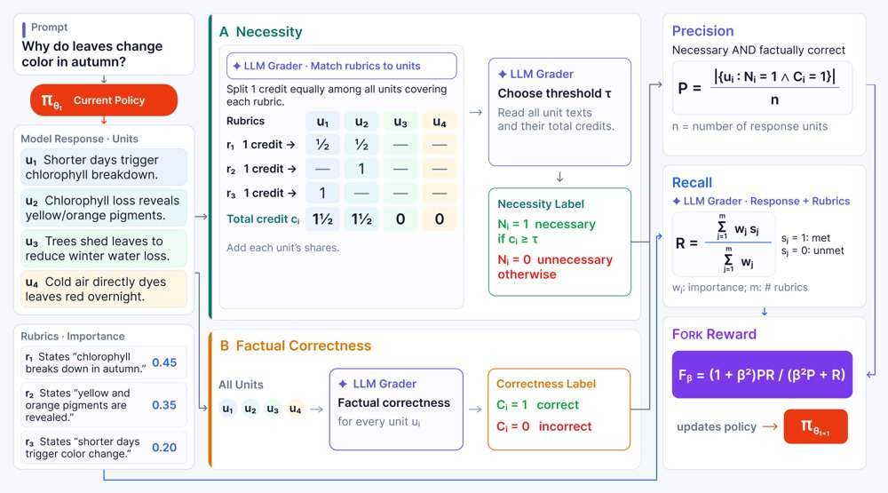
Fork 的训练流程：策略模型采样响应并切成单元，LLM 评分器把 rubric 匹配到单元并分配必要性信用、确定信用阈值，同时判定各单元事实正确性，精确率（必要且正确的单元占比）与召回率（加权 rubric 覆盖率）的调和平均即为奖励。
解决了什么问题。基于评分细则（rubric）的奖励让强化学习可以用于开放式生成这类无法直接验证的任务，但奖励通常定义为加权覆盖率，本质是一个召回目标。模型因此学会把响应写得更全，同时也更啰嗦，混入更多不必要或事实错误的内容，最终反而不如基座模型受偏好。论文把这一现象归因于奖励缺少精确率约束：没有任何项惩罚冗余、无关或错误的句子。
方法。Fork 先把响应切成句子级单元，再由 LLM 评分器把每条 rubric 匹配到相关单元，并按「每条 rubric 的信用均分给命中单元」的方式累积必要性信用，用动态阈值判定单元是否必要；同时独立判定每个单元的事实正确性。精确率定义为「既必要又事实正确」的单元占全部单元的比例，召回率仍用标准加权覆盖率，两者以加权调和平均（Fβ）合成奖励，用 GRPO 更新策略。
关键结果。在 Qwen2.5-7B-Instruct 上训练后，RubricHub-Medical 的 rubric 精确率从标准覆盖率奖励的 25.5 升到 53.2，平均响应长度从 9,195 降到 3,533，召回率基本持平（32.5 对 35.7）。相对基座模型的胜率从 10.6% 升到 68.0%，HealthBench 上从 22.1% 升到 74.1%，ResearchQA 上从 26.6% 升到 67.1%，RubricHub-Science 上从 42.5% 升到 61.5%。消融显示，把调和平均换成简单平均会得到更高精确率（+2.1 个百分点）但更低召回率（-6.3 个百分点）；作者还用 40 条响应、723 个单元验证必要性预测，删掉 40% 的单元之前召回率几乎不下降（其中 51% 的单元被判为不必要）。
为什么值得看。它把「该说什么」和「说的每句是否站得住」拆成两个可分别度量的目标，且不需要在线更新 rubric，为开放式任务的 RL 奖励设计提供了一个可直接套用的修正项。
局限 / 存疑。β 的取值仍未系统搜索，医学域用 β=1、科学域用 β=1.25，作者明确把最优 β 留作未来工作；必要性判断被作者称为瓶颈，候选训练评分器与前沿模型的相关性只有中等（选用的 Qwen3.6-35B-A3B 平均 r=0.714），且实验只覆盖单一基座模型、评测本身依赖 GPT-5.4 作为参考评分器。此外，响应长度压缩倍数在摘要写作 2.6 倍、正文 4.2 节写作 2.1 倍，两处数字不一致，需要读者留意。
基础大模型 & 基础模型底层研究
强化学习 RL & 序列决策
alphaXiv · arXiv
统一 token 条件，5B 世界模型视角切换达
把视角、动作、相机统一编码成 token 送入共享注意力空间，5B 模型在 WBench 导航上追平 22B 基线。
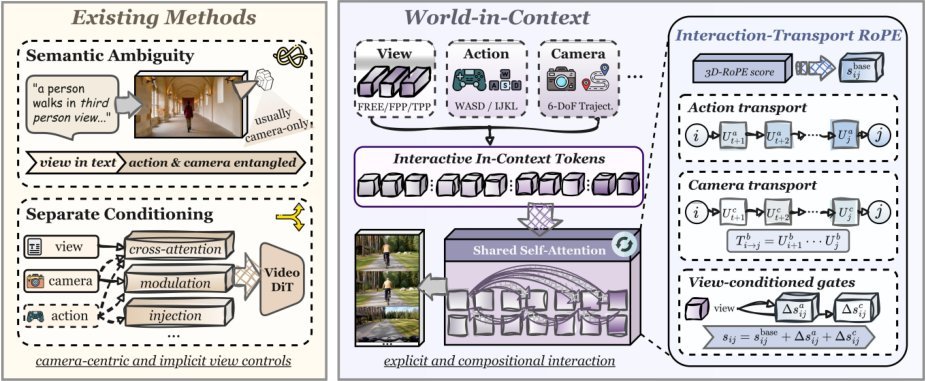
World-in-Context 在 Free、Fpp 与 Tpp 三种视角下生成交互视频，并支持联合动作与相机控制下的视频内动态视角切换。
解决了什么问题。现有交互式视频世界模型通常把视角模式隐含在文本描述里，自由相机漫游与第一人称运动语义常被混同，同一几何轨迹在不同视角下的物理含义因而无法区分。同时，角色动作与相机运动多被合并成单一相机轨迹控制，或送进彼此分离的架构分支（如 AdaLN 调制、加性注入），跨条件依赖只能被间接捕捉。
方法。作者提出 In-Context Conditioning（ICC），把视角模式（Free/Fpp/Tpp）、离散角色动作和连续相机位姿分别编码为时间对齐的 token 序列，直接拼接在视觉 latent 之前，进入同一自注意力空间，不再设专用条件分支。在此基础上引入 Interaction-Transport RoPE（IT-RoPE），将动作与相机控制诱导的变换沿执行序列累积，以中心化修正项注入时间注意力分数，使模型能区分端点相同但执行顺序不同的轨迹。模型基于 Wan2.2-TI2V-5B，使用 10 万条导航片段与 500 条视角切换序列训练。
关键结果。World-in-Context-5B 在 WBench 导航平均分 81.5，与 22B EchoWM 的 81.6 基本持平，交互分由基线 Zing-0.5 的 84.2 升至 86.0；Fpp↔Tpp 视角切换成功率达 93.8%，而现有 5B 基线最高仅 18.8%。无切换监督时成功率已达 37.5%（纯文本条件基线为 6.25%），加入 500 条切换片段后升至 93.8%。动作与相机的对照实验中，仅动作训练在平移与旋转精度上分别高出仅相机训练 6.5 和 3.9 分，仅相机训练在几何与光度一致性上分别高出 2.1 和 1.9 分，联合训练取得旋转精度 90.6、几何一致性 90.8、平移精度 89.3。IT-RoPE 相比 3D-RoPE 将导航从 80.5 提升至 81.2、交互从 86.2 提升至 86.8。数据效率上，5 万加 250 条片段的 ICC 切换率 75.0%，已超过加性注入用两倍数据（10 万加 500）的 71.9%。因果流式版本 WiC-Causal 导航 81.2、切换 90.6%。
为什么值得看。这项工作把多维交互控制重构成上下文建模问题，为交互式世界模型提供了一个随控制信号增多而扩展的统一接口，而不必每增加一种模态就新开一条架构分支。
局限 / 存疑。作者自述这是算法表述报告而非完整系统，训练集仅 10 万导航片段加 500 条切换序列，且离散动作主要由估计出的相机轨迹反推（action inversion）而非引擎遥测，标注噪声与解耦质量存疑。各方法训练数据规模披露不一致，主表因此未做跨方法数据量对比；导航上也只是与 22B 模型持平而非超越，评测仅限 WBench。
生成式 AI
alphaXiv · arXiv
让流式视频模型学会何时主动开口
Google等提出StreamVibe，把隐式、演变的用户意图建模为可追踪状态，让流式视频模型自己决定何时开口、说什么。
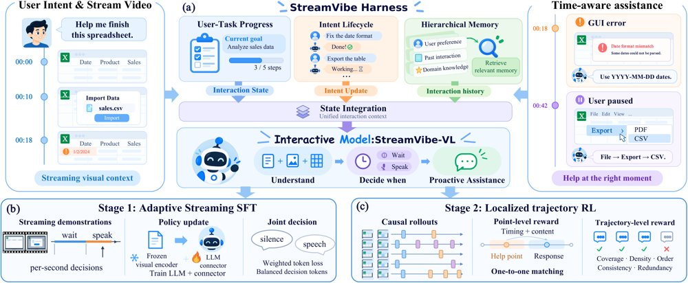
StreamVibe总览：推理时Harness维护持久交互状态与意图生命周期并从分层记忆检索历史；训练时自适应流式SFT平衡等待/发言，局部轨迹RL在帮助点附近采样并联合点级与轨迹级奖励。
解决了什么问题。现有主动式视频助手大多只处理显式、单轮的请求，比如“球进了就提醒我”，无法从持续画面中推断“我卡住了就帮我”这类隐式意图。更麻烦的是任务状态会随交互改变，先前恰当的提醒到后来可能已经过时或重复，而用户意图本身还会被修改、叠加或打断。论文把这三类难点分别对应为显式、隐式、动态意图，要求模型同时决定“何时响应”和“响应什么”。
方法。作者构建了StreamVibe-Bench，包含4,100条评测样本、20,546个帮助点和183.4小时视频，覆盖物理任务与GUI操作两类环境，并提供逐点评测与时序轨迹评测两套协议。模型侧提出StreamVibe-VL：先用自适应流式SFT联合学习沉默/响应决策与回答内容，再用局部轨迹强化学习在标注帮助点附近采样因果rollout，结合点级时序、内容奖励与轨迹级一致性奖励优化。外层的StreamVibe-Harness把每个意图维护为带独立生命周期的持久状态，用分层记忆压缩并检索相关历史，再交给策略做决策。
关键结果。在StreamVibe-Bench逐点评测中，StreamVibe-VL（RL）在动态意图上的时序F1为66.34，高于SFT的58.70；轨迹评测下隐式意图F1为26.26，高于SFT的22.43。作者报告其响应时机与回答质量比其它基线提升10.7%，加上Harness后持续交互再提升12.3%。消融显示RL主要压低误触发（轨迹评测显式意图FPR从SFT的6.33%降到2.02%），Harness则在多数设置下进一步减少冗余响应，动态意图上增益最明显。
为什么值得看。它把“主动助手”从实时长上下文问题拆成意图追踪与证据定位两个可分别优化的部分，并给出一个同时含隐式与动态意图的公开评测基准，为后续研究提供了可比较的起点。
局限 / 存疑。增益主要相对开源基线，在轨迹评测的显式意图上ViSpeak的时序F1为32.37，高于StreamVibe-VL（RL）的26.51（后者误触发率2.02%远低于12.75），说明高选择性仍以覆盖率为代价。评测采用±2秒匹配容差、答案质量由Claude Sonnet 4.6打分，训练数据中的候选帮助点由Gemini-3.8-Flash生成；论文也承认时序F1随交互时长下降的问题并未完全解决。
4
6
alphaXiv · arXiv
成功轨迹未必是好监督：按决策接地造数据
Trajectory2Gym 不再只筛成功轨迹，而是围绕覆盖不足的交互结构合成可执行对话，并且只对智能体可见历史能够支撑
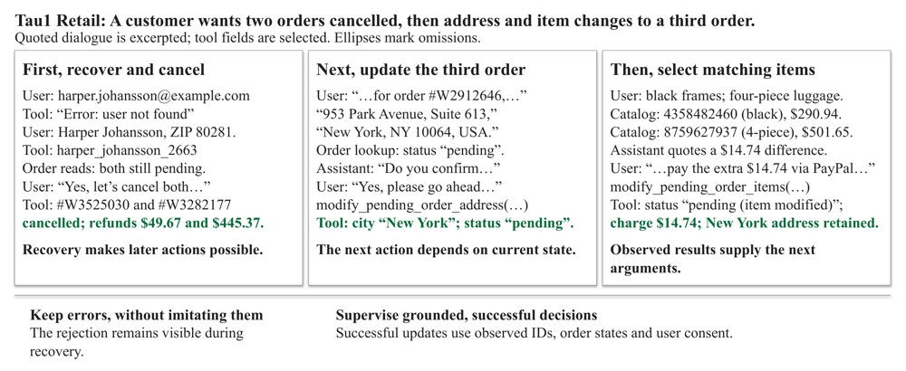
组合交互中的接地监督示意：一次失败的邮件查询作为可见上下文保留但不计模仿损失，后续可见证据支撑身份找回、取消、改地址以及基于商品目录的条目更新。
解决了什么问题。工具调用智能体的训练通常直接拿成功轨迹做监督，但成功只证明整段对话过关，不能证明每一步动作都合理。这类数据往往缺少多步依赖的覆盖，还包含在决策时刻无法由可见信息支撑的动作，因此成功轨迹不等于可用监督。
方法。作者提出两个判据：组合覆盖，即重要的观测-动作依赖要在数据中出现；决策接地，即每个被监督的动作都必须由学习者在当时可见的交互历史支持。Trajectory2Gym 围绕支持不足的组合结构构造可执行交互，只在真实执行中对接地的决策提取监督；结构支持选择负责分配经验，父级归一化监督微调则让权重以完整语义交互为单位，而不随渲染格式变化。
关键结果。在五个 Qwen3 规模（1.7B 至 30B）上，Trajectory2Gym 在每个测试规模都提升了 Tau1、Tau2 和 BFCL，三项等权平均提升 16.9–29.8 个百分点，增益主要集中在有状态、多轮交互任务上。评测集规模为 Tau1 含 115 个 Retail 与 50 个 Airline 任务，Tau2 含 40 个 Retail、20 个 Airline 与 40 个 Telecom 任务，BFCL 含 1,718 个样例。匹配的 8B 对照实验对四项设计选择给出方向性证据，其中单独增益最明显的是父级归一化。
为什么值得看。它把轨迹生成从收集成功样本改为刻意构造可学的交互经验，提示数据管线应同时跟踪结构覆盖与决策可监督性，而不只看轨迹或 token 数量。对多轮、有状态的工具调用任务，这比单纯扩大成功轨迹池更可能带来实质提升。
局限 / 存疑。Tau1 Airline 使用的是公开 50 任务同一集合做训练侧构造与全新对话评测，属于 seen-task 转导设置，不是任务不相交的泛化；作者也承认训练与评测划分只做到样例级分离，语义相近的工具行为仍可能跨集出现。组件消融只在 8B 规模上做，作者自称是方向性证据，且结论仅覆盖 Qwen3 系列与三个基准。
4
alphaXiv · arXiv
GPT-6 Astra 接触操作在 L3 全部失败
16 项家务任务分三层、模拟与真实各三次试验：GPT-6 Astra 零样本 L1 成功率 80.0%，L3 为零。
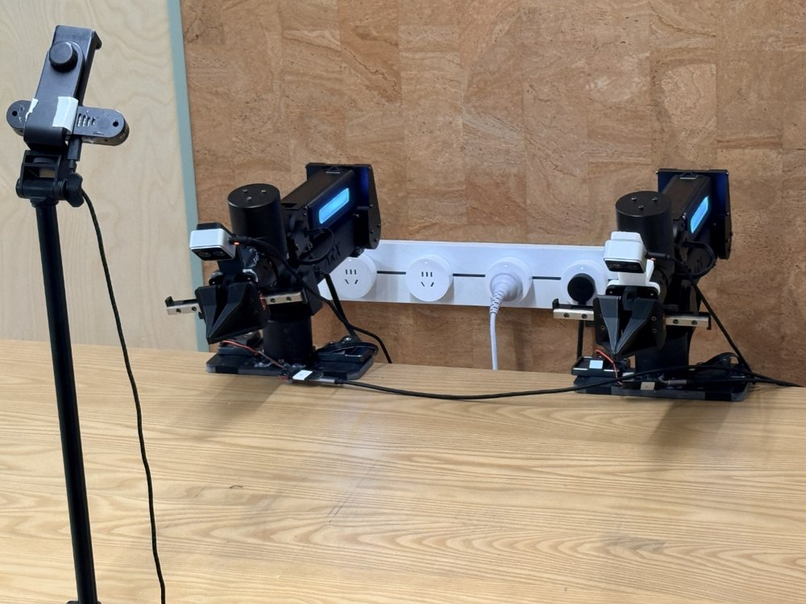
真实实验装置：两台 ARX R5 机械臂配双指夹爪共享桌面工作区，由一台外置 Orbbec Gemini Pro 相机和两台腕部 Orbbec Gemini 305 相机提供三路视角，照片拍摄于放置任务物体之前。
解决了什么问题。通用基础模型在接触密集型操作上的表现越来越受关注，但总体成功率无法说明究竟是哪些物理交互要求卡住了执行。作者要回答两件事：随着接触要求逐级加码，GPT-6 Astra 能完成哪些任务；在仿真中观察到的能力与瓶颈，能否在真实世界中重现。
方法。作者构建 PhysLadder：16 项家务任务按累积要求分为三层——L1 只需选择接触并做几何对齐，L2 增加持续接触中的力调节，L3 还要求接触重构与力调节协同。每项任务都在物理与视觉匹配的仿真（Isaac Sim）与真实环境（两台 ARX R5 加双指夹爪、一外置两腕部相机）中各运行 3 次，任务定义与成功判据共享。GPT-6 Astra 以零样本方式闭环执行，只有三路 RGB 视图与本体反馈，没有深度图和接触力传感器，力调节只能通过运动指令和夹爪开合实现。
关键结果。真实世界成功率从 L1 的 80.0% 降至 L2 的 47.6%、L3 的 0.0%；仿真对应为 66.7%、47.6%、0.0%。整体成功率真实 45.8%（22/48）、仿真 41.7%（20/48），16 项任务中有 10 项在两环境成功次数完全相同，其余 6 项相差一次成功（共 3 次试验）。L3 四个任务（拧瓶盖、拧螺母、推转书堆、扫积木）在任一环境都没有完整成功，尽管部分执行出现局部进展。
为什么值得看。这说明现成的前沿模型在语义理解与抓取放置上已经可用，但在需要持续接触、力调节和接触切换的任务上存在明确断层。分层且匹配的仿真基准若对同一模型能复现真实瓶颈，就有希望替代部分真机试验，用于可重复、可扩展的评测。
局限 / 存疑。作者自己承认，16 项任务、每项每环境仅 3 次试验，真机资源限制了统计精度，且仿真与真实的对应只在 GPT-6 Astra 上做了描述性比较，能否预测其他模型尚未验证。评测也无法分离模型决策、感知与机器人执行各自的贡献，Charger Alignment 与 Whiteboard Wiping 等任务的真机结果还依赖人工目视判定。
alphaXiv · arXiv
期刊
Nature · Nerve activity initiates autoimmune hair loss
《Nature》刊文指出，神经活动可启动自身免疫性脱发，为理解自身免疫触发机制提供了新线索。该发现有望帮助开发更精准的治疗策略，值得关注其后续机制研究与转化进展。
Nature · Women might have invented language — but not alone
《Nature》刊出的一篇分析探讨人类言语的起源，作者提出推动我们使用词语的可能是社会凝聚力，而非冲突。文章以富有说服力的论证重新审视语言如何在社会互动中形成，对关注语言与交流的计算研究者亦有启发。